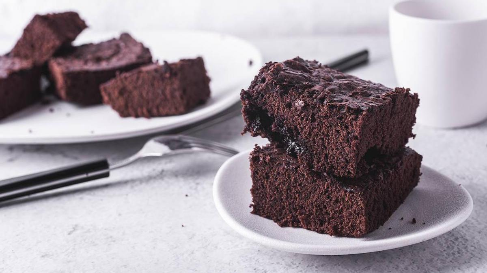

Brownie
"Muy bueno" -yo

Ingredientes:
- 250g de chocolate fondant para repostería
- 175g de mantequilla
- 150g de harina
- 100g de nueces peladas
- 3 huevos
- 225g de azúcar
- una pizca de vainilla
Preparación:
- Troceamos el chocolate y fundimos al baño María junto con la mantequilla. En otro recipiente batimos los huevos y mezclamos con el azúcar con una batidora eléctrica con varillas, para que suba un poco el volumen. Una vez que obtengamos una textura homogénea, añadimos poco a poco la mezcla de chocolate y mantequilla fundidos. Mezclamos todo, utilizando para ello una cuchara de madera.
- Colocamos la harina en un bol amplio y allí vertemos, poco a poco, nuestra mezcla. Mientras la incorporamos, mezclamos con la cuchara. El resultado, pasados unos pocos minutos, ha de ser una masa densa, envolvente y sin grumos. Incorporamos ahora unas gotitas de esencia de vainilla y las nueces troceadas y ligeramente enharinadas, para evitar que se vayan al fondo del brownie durante el horneado.
- Precalentamos el horno a 180ºC. Mientras coge temperatura, untamos con mantequilla y espolvoreamos con un poco de harina mezclada con cacao en polvo una fuente de horno rectangular para que nos quede con un grosor de unos 5 centímetros. Vertemos la mezcla de chocolate en la fuente y, cuando el horno esté caliente, introducimos la fuente a media altura.
- El brownie tardará alrededor de media hora en hacerse. No obstante, la mejor manera de asegurarnos de que está cocinado es pincharlo con un palillo. Si el palillo sale limpio, significa que el bizcocho está hecho. Sacamos del horno en cuanto esté cocinado. Dejamos reposar durante 10 minutos antes de desmoldar y pasar a una rejilla, donde debe terminar de enfriarse antes de que lo probemos.
Información nutricional:
- Calorías:
- 1282
- Grasa:
- 82,8g
- Grasa saturada:
- 38g
- Azúcares:
- 71,9g
- Sal:
- 0,1g